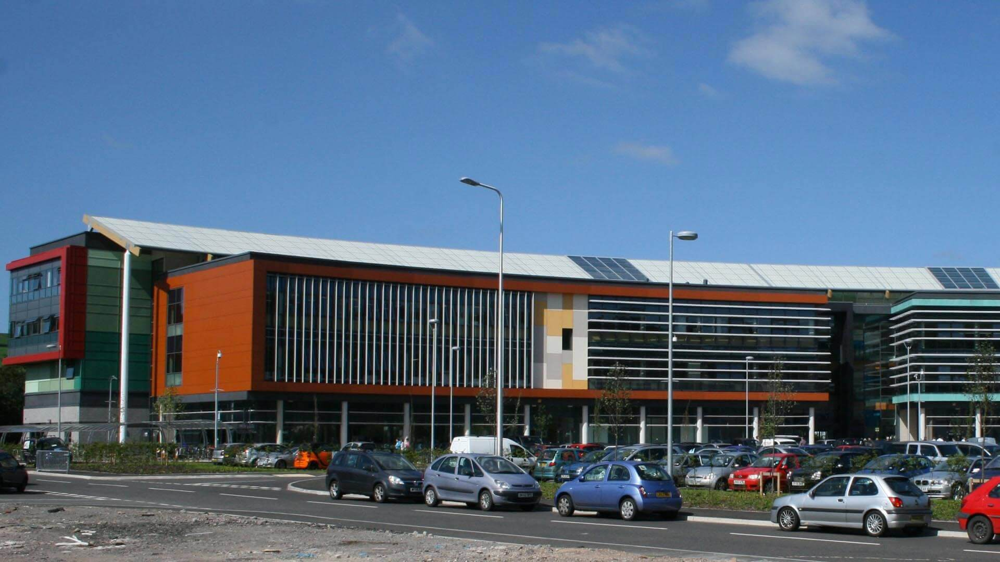

I created this website as a part of my job interview. The company that I want to apply for, Cymoedd Creations Game Studios have tasked me with creating a website promoting my skills, as well as achievements and my interests. I hope that the website that I have created will help the company with deciding to hire me for the possition of a junior web developer and I will be able to continue to develop my coding skills and allow me to monetize my passion.
